第 3 章 ggplot2图层语法与GBD数据展示一
3.1 图层的基本概念
ggplot2 图层语法，可以类比于 photoshop 中图层的概念：
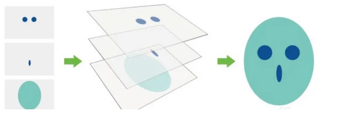
ggplot2 绘制的图形，也是由一个个图层叠加而成的。
每一个图层，都可以指定用于画图的数据，指定需要绘制的几何图案，以及图像的美学属性映射，包括颜色、坐标、位置、尺度等等；图层代码与图层 代码之间，则用加号”+“进行连接。
图层语法模板
# 加载 ggplot2 包
library(ggplot2)
# 打开画板
ggplot(data=df1, # 指定数据
aes(x=x1,y=y1,color=group1))+ # 美学属性映射
# 图层 1
geom_point()+
# 图层 2
geom_line(data=df2,aes(x=x2,y=y2,color=group2))+
# 其他
scale_y_continues()+ # 尺度设定
facet_wrap()+ # 分面
theme() # 主题风格设定3.2 ggplot2 基本元素
3.2.1 数据
画图第一件事，肯定是指定用于画图的数据。一般用于 ggplot2 画图的数据，是长数据 (整洁的数据)。
3.2.2 几何图形
统计图中最常见的几种几何图案：点、线、柱状图、条形图、直方图、误差图、箱图……
ggplot2 用 geometry 函数指定所需绘制的图案，比如 geom_point(),geom_line(),geom_bar(),geom_errorb
geom 是 geometry 的前四个字母， geom_ 下划线后连接几何图形比如point,bar,box 等。 geometry 函数可以设定不同的参数，包括坐标，位置，颜色，尺度等。
3.2.3 美学属性映射
美学的英文单词： aesthetic。 aes() 函数将某个变量的数据映射给某种美学属性。美学属性可以在画板处进行全局映射，也可以在某个图层中进行局部映射。
# 打开画板
ggplot(data=df1,
aes(x=x1,y=y1,color=group1))+ # 全局映射
# 图层 1
geom_point()+ # 受全局映射的控制
# 图层 2
geom_line(data=df2,aes(x=x2,y=y2,group=group2))+ #局部映射不受控制
# 其他
scale_y_continues()+
facet_wrap()+
theme()3.3 我的第一个图
这里我们用 Global_HIV.csv 数据进行第一个图的绘制：
使用线图展示 1990 到 2019 年全球男、女 HIV 发病人数的变化趋势。
3.3.1 准备画图数据
- 加载需要的R包
library(ggplot2)
library(tidyverse)- 读取数据
df <- read_csv("data/Global_HIV.csv")- 查看数据
colnames(df)## [1] "measure" "location" "sex" "age"
## [5] "cause" "metric" "year" "val"
## [9] "upper" "lower"unique(df$measure)## [1] "Deaths"
## [2] "YLLs (Years of Life Lost)"
## [3] "Incidence"
## [4] "DALYs (Disability-Adjusted Life Years)"
## [5] "YLDs (Years Lived with Disability)"
## [6] "Prevalence"unique(df$sex)## [1] "Male" "Female" "Both"unique(df$age)## [1] "<5 years" "5-9 years"
## [3] "10-14 years" "15-19 years"
## [5] "20-24 years" "25-29 years"
## [7] "30-34 years" "35-39 years"
## [9] "40-44 years" "45-49 years"
## [11] "50-54 years" "55-59 years"
## [13] "60-64 years" "65-69 years"
## [15] "70-74 years" "75-79 years"
## [17] "All ages" "Age-standardized"
## [19] "80-84 years" "85-89 years"
## [21] "90-94 years" "95+ years"unique(df$cause)## [1] "HIV/AIDS and sexually transmitted infections"
## [2] "HIV/AIDS"
## [3] "Sexually transmitted infections excluding HIV"
## [4] "Syphilis"
## [5] "Chlamydial infection"
## [6] "Gonococcal infection"
## [7] "Other sexually transmitted infections"
## [8] "Trichomoniasis"
## [9] "Genital herpes"unique(df$metric)## [1] "Number" "Percent" "Rate"- 选择数据
temp <- df |>
filter(measure=="Incidence") |>
filter(sex%in%c("Male","Female")) |>
filter(age=="All ages") |>
filter(cause=="HIV/AIDS") |>
filter(metric=="Number")
str(temp)## spc_tbl_ [60 × 10] (S3: spec_tbl_df/tbl_df/tbl/data.frame)
## $ measure : chr [1:60] "Incidence" "Incidence" "Incidence" "Incidence" ...
## $ location: chr [1:60] "Global" "Global" "Global" "Global" ...
## $ sex : chr [1:60] "Male" "Female" "Male" "Female" ...
## $ age : chr [1:60] "All ages" "All ages" "All ages" "All ages" ...
## $ cause : chr [1:60] "HIV/AIDS" "HIV/AIDS" "HIV/AIDS" "HIV/AIDS" ...
## $ metric : chr [1:60] "Number" "Number" "Number" "Number" ...
## $ year : num [1:60] 1991 1991 1990 1990 1994 ...
## $ val : num [1:60] 1054341 1313369 919820 1137890 1334822 ...
## $ upper : num [1:60] 1226338 1579485 1063665 1371008 1582749 ...
## $ lower : num [1:60] 888662 1060693 780544 916513 1121995 ...
## - attr(*, "spec")=
## .. cols(
## .. measure = col_character(),
## .. location = col_character(),
## .. sex = col_character(),
## .. age = col_character(),
## .. cause = col_character(),
## .. metric = col_character(),
## .. year = col_double(),
## .. val = col_double(),
## .. upper = col_double(),
## .. lower = col_double()
## .. )
## - attr(*, "problems")=<externalptr>3.3.2 画图
思考：我们想直观地对比男性、女性 HIV 发病人数发展变化趋势，需要将两条线放在同一个图案中，该怎么做？
方法：使用不同的颜色进行区分。用 ggplot2 美学属性映射的思维，就是将性别这个变量映射到颜色中去。
fig1 <- ggplot(data = temp,aes(x=year,y=val,color=sex))+
geom_line()
fig1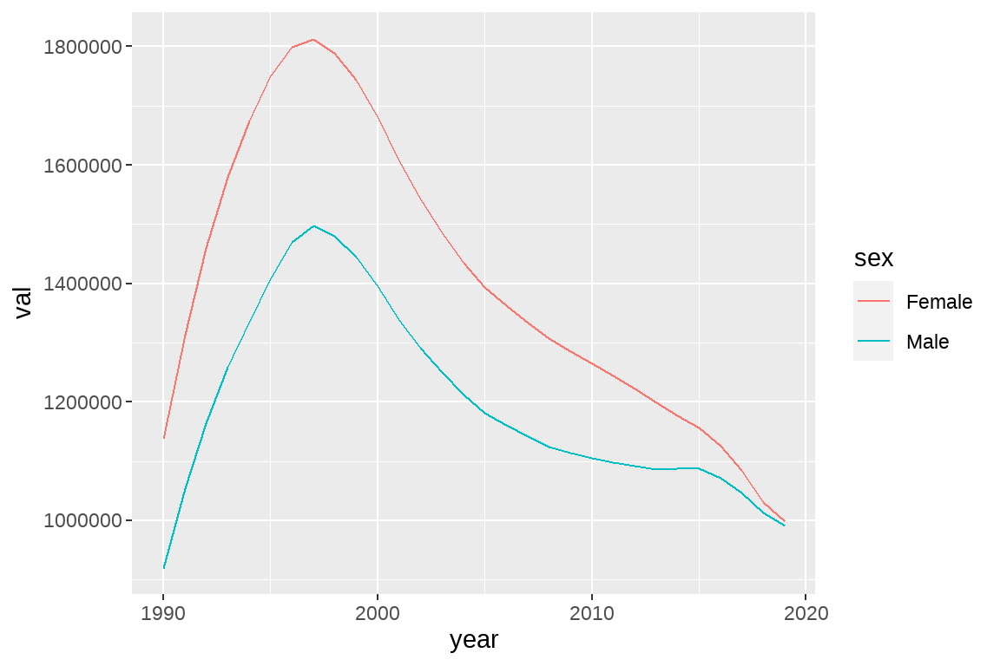
3.3.3 如何查看 ggplot2 内部函数参数的种类及作用？
?ggplot
?aes
?geom_line3.3.4 图片的保存
两种保存图片的方式：
1、使用 export 导出 (不推荐)；【直接再窗口保存，不推荐】
2、使用 ggsave() 函数导出：
ggsave(" 我的第一个图.jpeg",width = 8,height = 6,dpi = 300)3.3.5 作业一
- 给 fig1 增加一个点图层，点为各个年份的发病人数，将每个点的大小设定为 1.2(size=1.2)，并将生成的图片对象赋值给 fig2。
fig2 <- ggplot(data = temp,aes(x=year,y=val,color=sex))+
geom_line()+
geom_point(size= 1.2)
fig2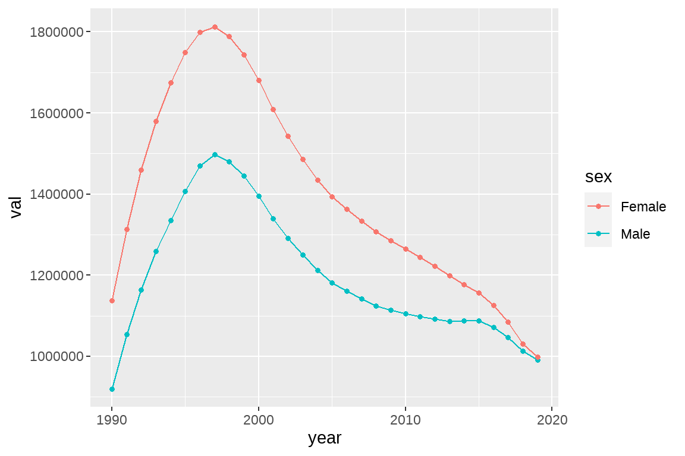
- 给 fig2 增加一个图层, 展示发病人数的 95%UI, 提示：geom_ribbon(aes(ymin=?,ymax=?)), 将 95%UI 的填充颜色按照性别区分（提示：将性别这个变量映射到填充颜色中去，设置 fill=?）；并将填充颜色的透明度设置为 0.1（alpha=?）。最终将生成的图片对象赋值给 fig3.
# fig3 <- ggplot(data = temp,aes(x=year,y=val,color=sex))+
# geom_line()+
# geom_point(size= 1.2)+
# geom_ribbon(aes(ymin=lower,ymax=upper,fill=sex),alpha=0.1)
# fig3
# 或者
fig3 <- fig2 + geom_ribbon(aes(ymin = lower, ymax = upper, fill = sex),
alpha = 0.1)
fig3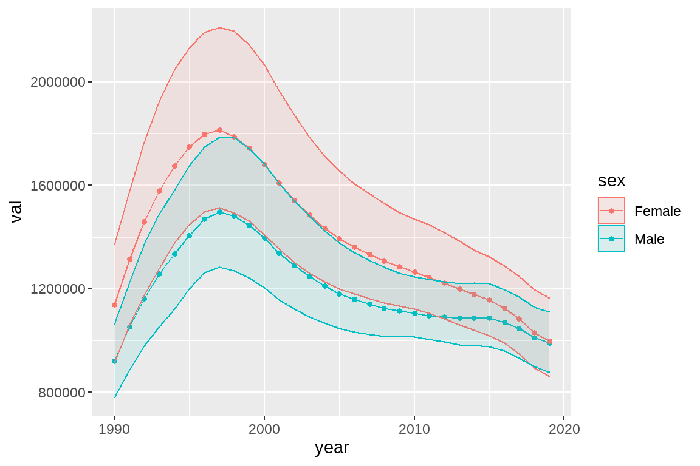
- 去除 fig3 图片中 95%UI 的颜色边框（提示：设置 color=NA），并大胆猜测 fill 和 color 参数的作用范围。然后赋值给 fig4。
fig4 <- ggplot(data = temp,aes(x=year,y=val,color=sex))+
geom_line()+
geom_point(size= 1.2)+
geom_ribbon(aes(ymin=lower,ymax=upper,fill=sex),alpha=0.1,color=NA)
fig4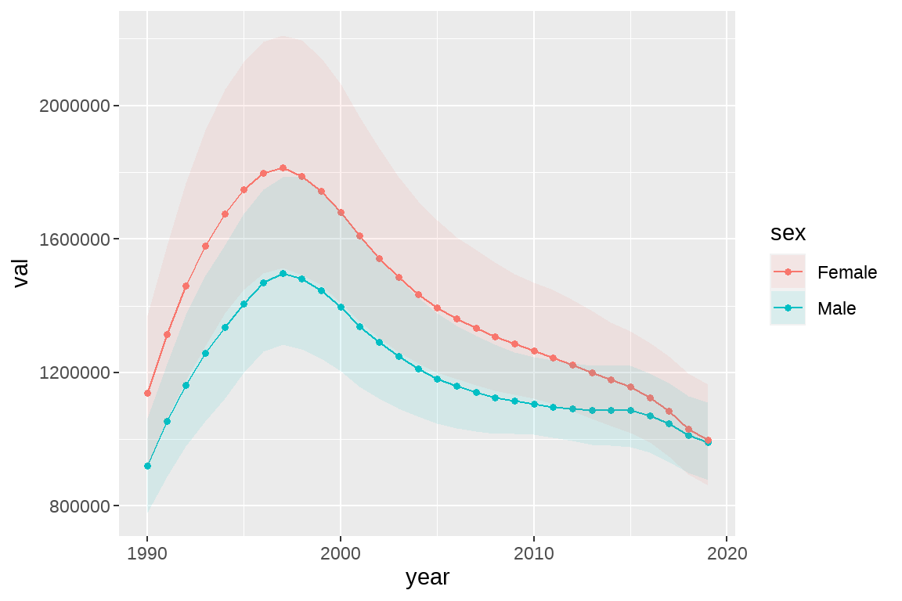
- 使用线图展示全球因艾滋病死亡人数的发展变化趋势，并用 ggsave 函数保存到工作路径中。
fig5 <- ggplot(data = df,aes(x=year,y=val,color=sex))+
geom_line()
fig5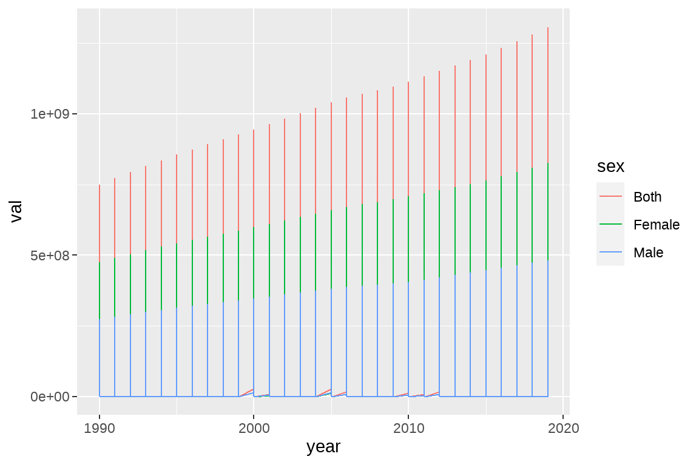
# ggsave(filename = "AIDs线图.jpeg",width = 8,height = 6,dpi = 300)3.4 图片的标题与注脚
3.4.1 增加标题、副标题、注脚、标签
前面我们生成了 fig4：
现在要在图片上方增加一个图片标题 (title)： Temporal trend of global incidence number of HIV; 副标题 subtitle: from 1990 to 2019; 在图片下方增加
注脚 (caption)： base on data from GBD 2019；最后打上一个”A” 的标签。
fig5 <- fig4 +
labs(title = "Temporal trend of global incidence number of HIV",
subtitle = "from 1990 to 2019",
caption = "base on data from GBD 2019",
tag="A")
fig5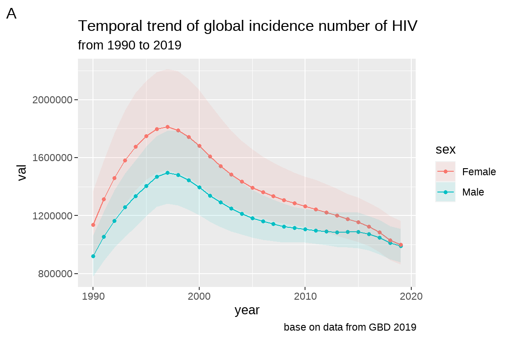
3.4.2 修改图片标题的字体大小、位置
fig5 <- fig4 +
labs(title = "Temporal trend of global incidence number of HIV",
subtitle = "from 1990 to 2019",
caption = "base on data from GBD 2019",
tag="A")+
theme(plot.title = element_text(size = 10,
hjust = 0.5)) # h表示横向，just表示矫正；vjust表示垂直矫正。 0-->1 左-->右
fig5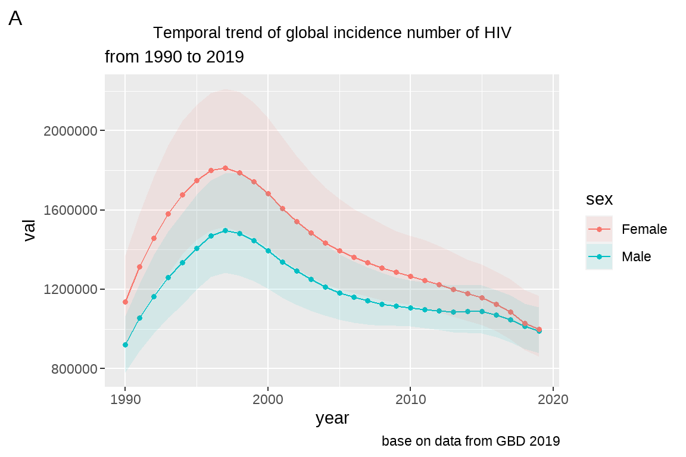
3.4.3 作业二
将 fig5 的图片标题，副标题字体大小均设定为 12，居中显示。
fig5 <- fig4 +
labs(title = "Temporal trend of global incidence number of HIV",
subtitle = "from 1990 to 2019",
caption = "base on data from GBD 2019",
tag="A")+
theme(plot.title = element_text(size = 10,
hjust = 0.5)) +# h表示横向，just表示矫正；vjust表示垂直矫正。 0-->1 左-->右
theme(plot.subtitle = element_text(size = 12,
hjust = 0.5))
fig5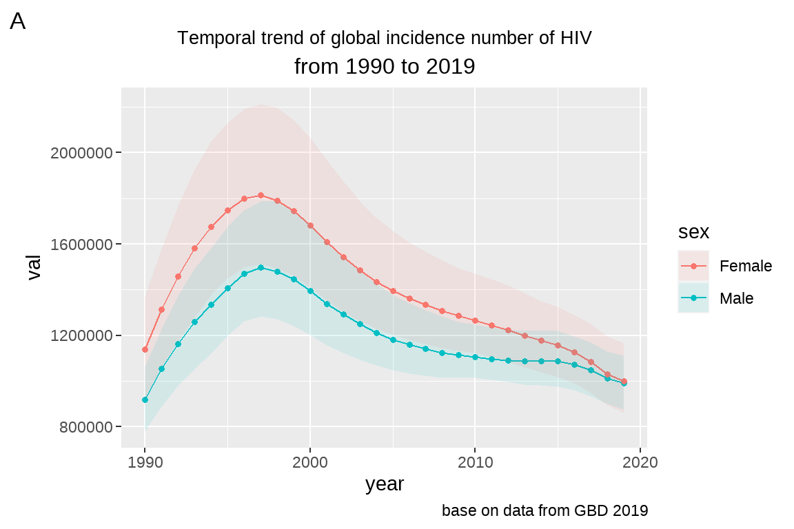
3.5 坐标轴设定
3.5.1 坐标轴标题修改
修改 fig5 坐标轴的标题, 将 Y 轴的设为 Incidence number，将 X 轴的标题去掉.
# 方法一：
fig5+
xlab(label = "")+
ylab(label="Incidence number")
# 方法二：
fig5+
labs(x="",y="Incidence number")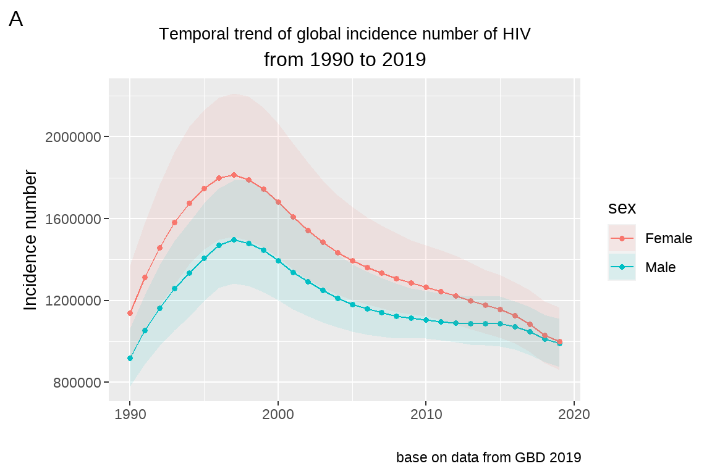
- 坐标轴标题 (title) 字体大小设定
字体大小一般都在 theme 里面设定：
fig5+
xlab(label = "")+
ylab(label="Incidence number")+
theme(axis.title = element_text(size = 6))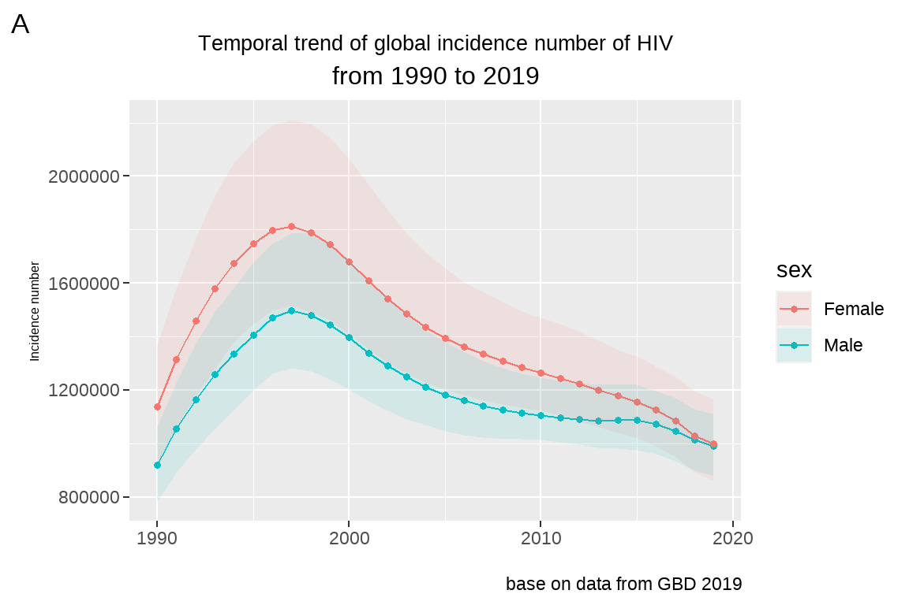
3.5.2 坐标轴尺度、分段、标签设定
将 fig5 的 x 轴限度设置在 1990 年到 2019 年之间，间隔 5 年分段, 并改变每段标签为”year:1990”。
fig5+
labs(x="", y="Incidence number")+
scale_x_continuous(limits=c(1990,2020),
breaks = seq(1990,2020,by=5),
labels = paste("year:",
seq(1990,2020,by=5)))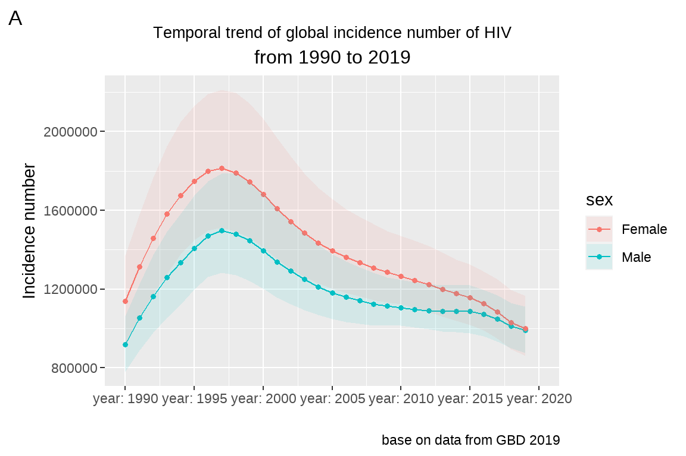
3.5.3 坐标轴文字（text）大小、旋转设定
将上图 x 轴文字大小设定为 8，旋转为 45° 排列，同样在 theme 里面设定。
fig5+
labs(x="", y="Incidence number")+
scale_x_continuous(limits=c(1990,2020),
breaks = seq(1990,2020,by=5),
labels = paste("year:",
seq(1990,2020,by=5)))+
theme(axis.text.x = element_text(size=8,
angle = 45,
hjust=1,
vjust = 1))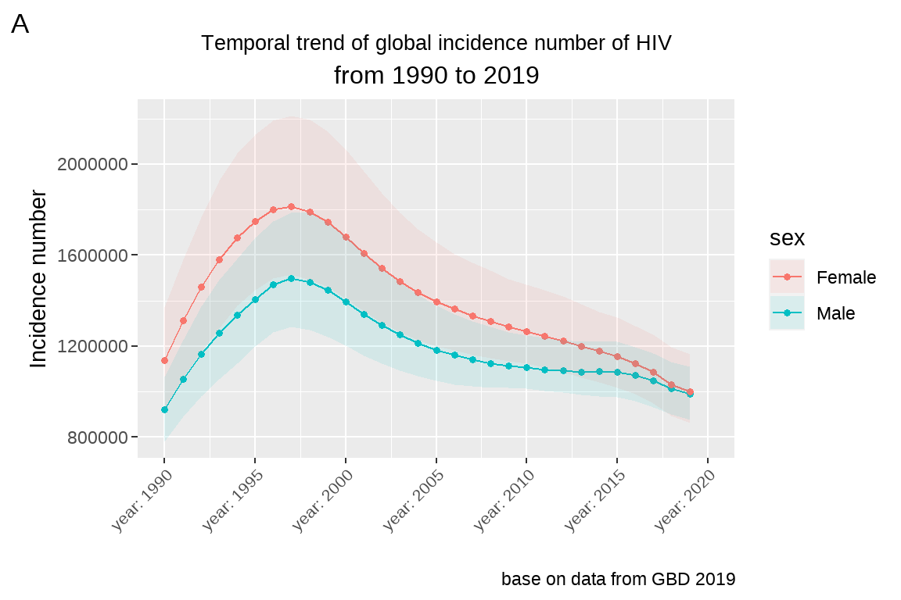
3.5.4 作业三
设定 fig5 的 y 轴，将它的限度设置在 0 到 2.5 million 之间，间隔为 0.5 million，尺度缩小 1 百万倍，同时 y 轴的标题变为 Incidence number(million)
fig5 +
labs(x="", y="Incidence number")+
theme(axis.text.x = element_text(size=8,
angle = 45,
hjust=1,
vjust = 1))+
scale_x_continuous(limits=c(1990,2020),
breaks = seq(1990,2020,by=5),
labels = paste("year:",
seq(1990,2020,by=5)))+
scale_y_continuous(limits=c(0,2500000),
breaks = seq(0,2500000,by=500000),
labels = paste(seq(0,2.5, by = 0.5), "millon")) 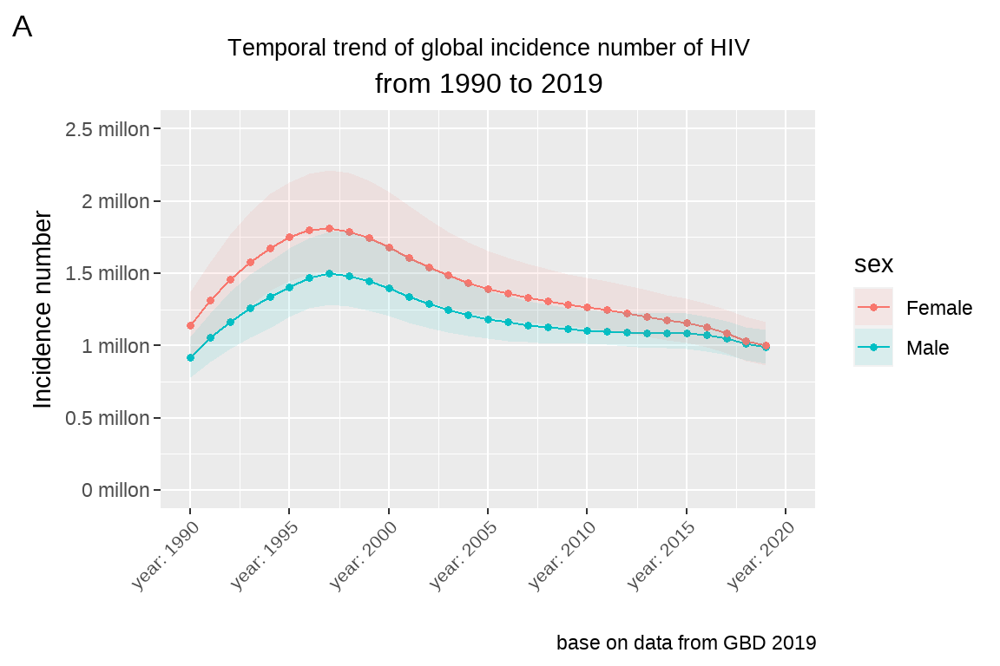
3.6 颜色尺度的调整
3.6.1 手工调整颜色
手动调整颜色，将男性颜色设置为蓝色，女性颜色设置为红色
常用颜色代码：＃号后面 6 位数。https://www.cnblogs.com/biostat-yu/p/13839621.html
fig5+
scale_fill_manual(values=c("red","blue"))+
scale_color_manual(values=c("red","blue"))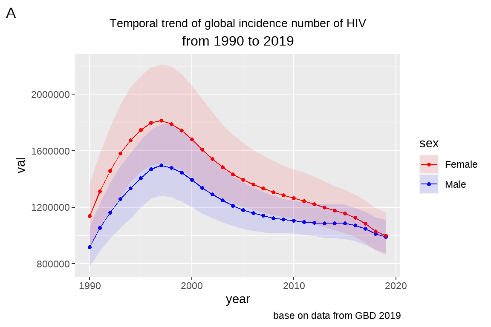
3.6.2 使用 ggsci() 代替 scale_fill/color_manual
# install.packages("ggsci")
library(ggsci)
fig5+
scale_fill_nejm()+ # 使用新英格兰配色
scale_color_nejm()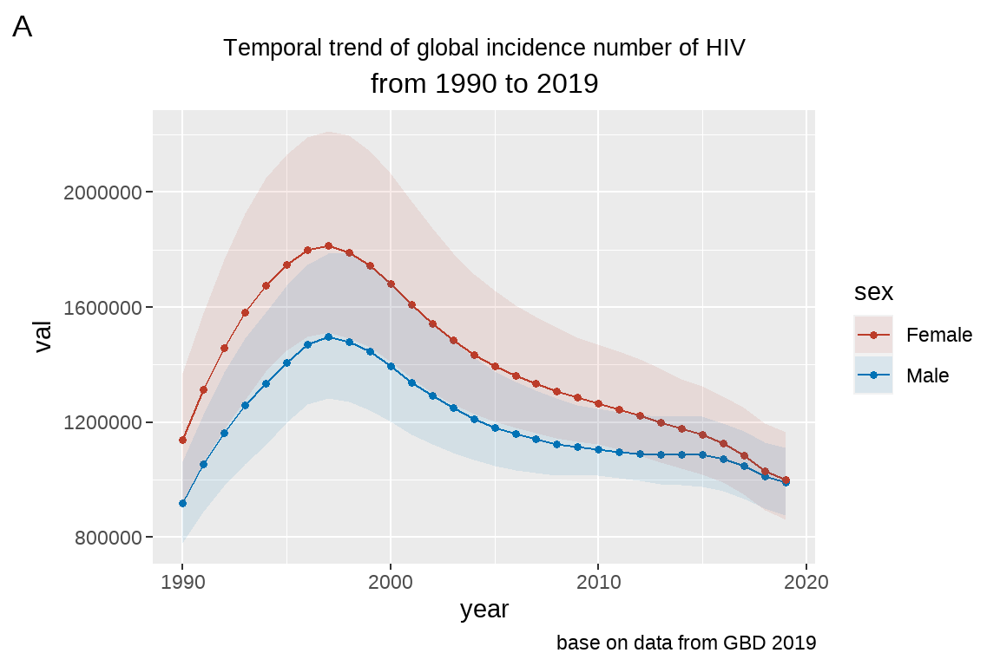
fig5+
scale_fill_lancet()+ # 使用柳叶刀配色
scale_color_lancet()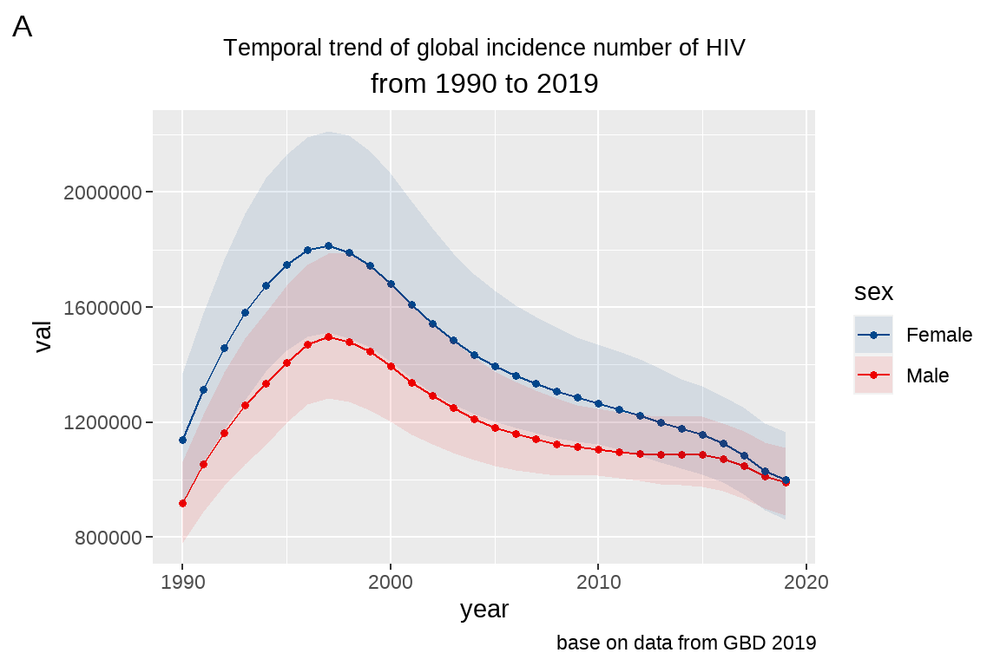
3.7 修改主题的其他元素： theme()
前面已经提到，图片的 title, 轴的 title、 text，字体大小等都在 theme 里面设定，这里还可以修改其他元素：
- 常用主题
# theme_bw()
fig7 <- fig5+
labs(x="", y="Incidence number")+
scale_x_continuous(limits=c(1990,2020),
breaks = seq(1990,2020,by=5),
labels = seq(1990,2020,by=5))+
scale_fill_nejm()+
scale_color_nejm()+
theme_bw()
fig7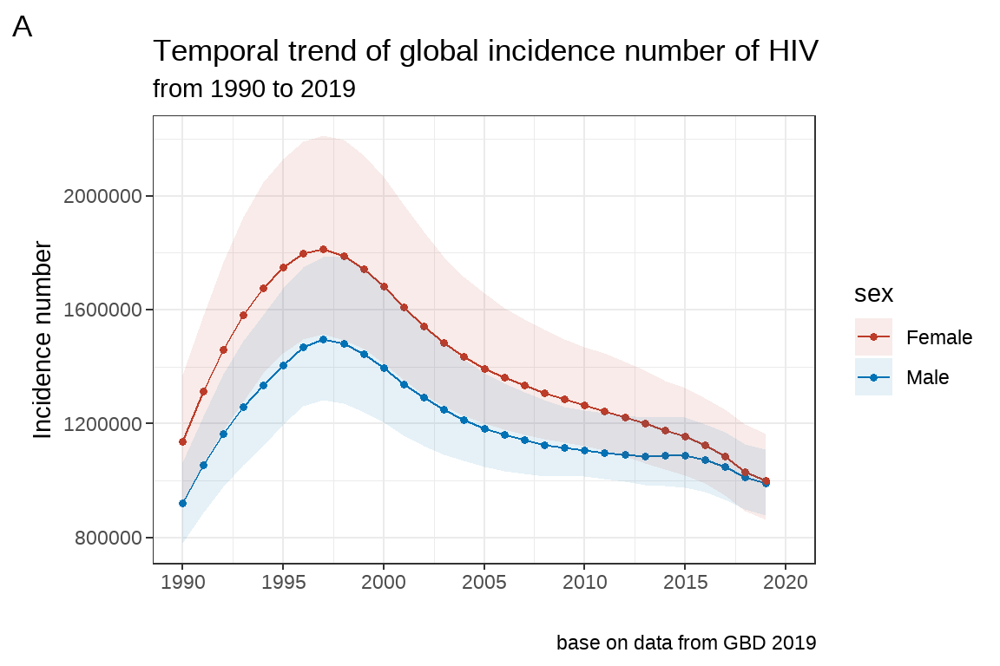
# theme_classic()
fig7+theme_classic()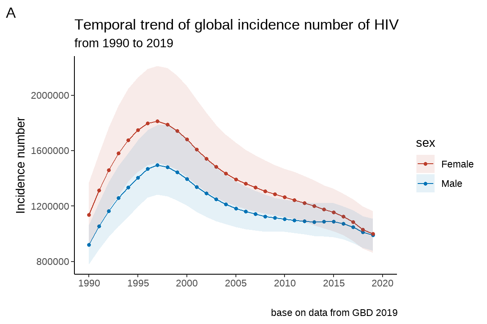
# theme_gray()
fig7+theme_gray()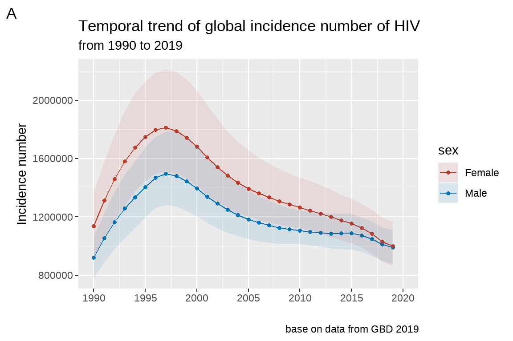
3.7.1 图例 legend 的修改
3.7.1.1 legend 可以放在图片的上下左右：
# 没有 legend
fig7+theme(legend.position = "none")# 没有 legend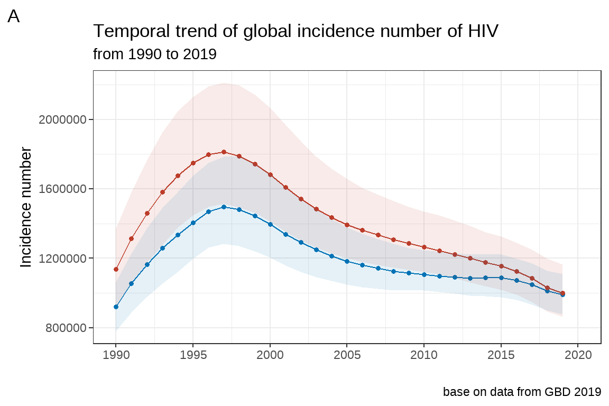
# legend 在上方
fig7+theme(legend.position = "top")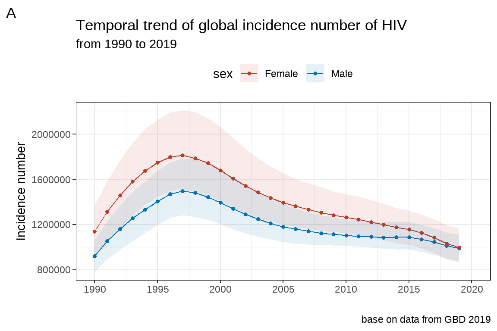
legend 还可以在左边, 下方，右边，相应的参数取值为 legend.position =“left”,“bottom”,“right”。
3.7.1.2 legend 也可以放在图片的内部：
# 比如在左下角：
fig5+theme(legend.position = c(0,1),
legend.justification=c(0,1))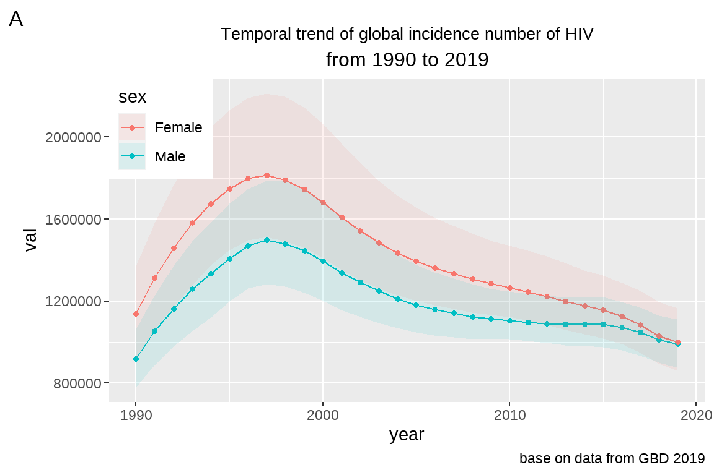
# 比如在右上角：
fig5+theme(legend.position = c(1,1),
legend.justification=c(1,1))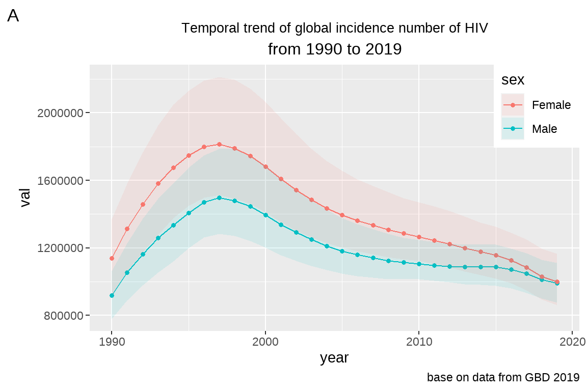
参数设定规则： legend.position = c(0,1) 中 c(0,1) 逗号前面的值设定 legend在 x 轴的相对位置；逗号后面的值设定 legend 在 y 轴的相对位置，另外，legend.justification 设定与 legend.position 一致即可。比如设定 legend 在图片内左下角，左上角，右上角，右下角分别为 c(0,0),c(0,1),c(1,0),c(1,1)。
3.7.2 作业四
将 fig5 的背景主题设置为 theme_bw()，并将 legend 设置在图片内正中间。
fig5+theme_bw()+
theme(legend.position = c(0.5,0.5),
legend.justification=c(0.5,0.5))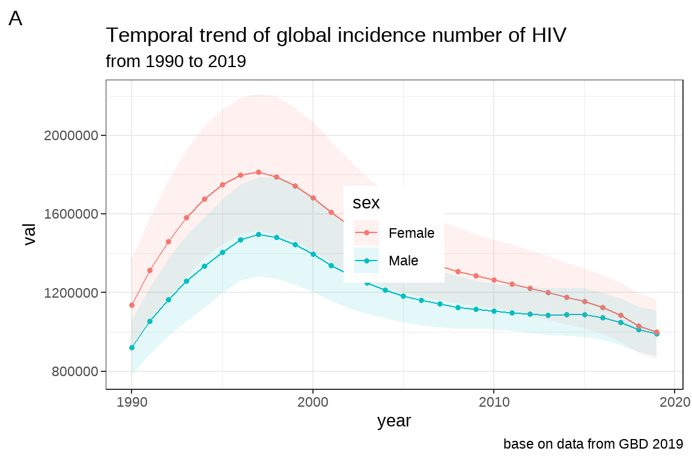
3.8 总结
画图之前查看数据；
想好用什么几何图形展示数据：点？线？柱？条？
设定 aes(), 指定 x、 y、 color、 fill 等参数的映射；
映射可通过画板全局设定，也可以在单个图层设定；
图层以 + 号连接；
坐标轴、颜色等尺度可以通过 scale_ 图层指定；
字体大小、位置、旋转等可以通过 theme 图层设定。
3.9 课后作业
使用线图展示全球 HIV 的 DALY number 数据，要求：
有图片 title,caption,tag，
x 轴的尺度在 1990-2020 之间，间隔为 5 年， 45° 旋转
不同颜色表示男性、女性；
展示 95%UI，有透明度、边框颜色参数的设定；
设定 legend 位置为图片内，右下角；
使用 ggsave 导出 jpeg 格式， dpi=300。
df <- read_csv("data/Global_HIV.csv")
temp3 <- df |>
filter(measure=="DALYs (Disability-Adjusted Life Years)") |>
filter(sex%in%c("Male","Female")) |>
filter(age=="All ages") |>
filter(cause=="HIV/AIDS") |>
filter(metric=="Number")
# 看看最大值有多大
max(temp3$val)## [1] 58206725max(temp3$upper) #72,576,395## [1] 72576395# 绘图
library(ggsci)
pic <- ggplot(data = temp3,aes(x=year,y=val,color=sex))+
geom_line()+
geom_ribbon(aes(ymin=lower,ymax=upper,fill=sex),
alpha=0.1,
color=NA)+
scale_x_continuous(limits = c(1990,2020),
breaks = seq(1990,2020,by=5),
labels = seq(1990,2020,by=5))+
scale_y_continuous(limits = c(0,80000000),
breaks = seq(0,80000000,by=20000000),
labels = seq(0,80,by=20))+
scale_fill_nejm()+
scale_color_nejm()+
labs(title="Temporal trend of golobal DALY number",
subtitle = "of HIV from 1990 to 2019",
x="",
y="DALY number (million)")+
theme_bw()+
theme(legend.position = c(1,0),
legend.justification=c(1,0),
legend.background = element_blank(),
axis.text.x = element_text(angle = 45,hjust = 1,vjust=1))
pic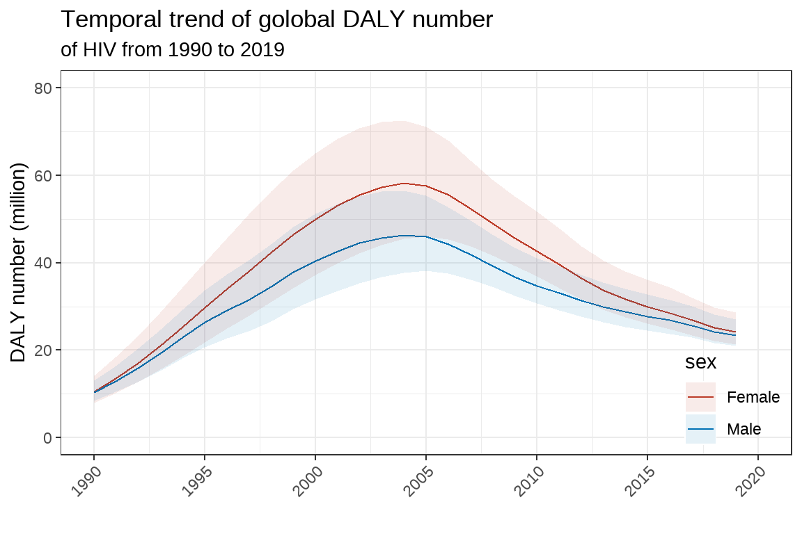